A enguia colossal: o corpo
04/11/2026 · a enguia inteira a partir da cabeça aprovada (a E3 com o pescoço, folhas/2026-11-04/enguia-b5/cabecas-b5.html) · spec §1.3 e §7.2 · nada instalado.
Você: "Boa, gostei. Pode seguir para o corpo".
Como saíram: a cabeça aprovada fica à esquerda de um quadro de 384×80 e o PixelLab pinta só o corpo e a cauda à direita dela (inpaint). As cores novas foram puxadas para a paleta da cabeça, para ser o mesmo material. A cabeça não mudou: 0 pixel diferente nas cinco escolhidas.
Quatro conceitos de corpo, duas tentativas de cada: as costelas (o pescoço oco seguindo pelo corpo), a barbatana (a fita de enguia em cima e embaixo), os canos (canos e respiros nas três cores) e os espinhos (no dorso).
O tamanho: aqui ela tem a largura da tela, com cerca de 10 anéis até a cauda. No jogo ela é maior que a tela (16 a 20 anéis, spec §1.1): os anéis do meio se repetem. Ela está esticada quase reta de propósito; os anéis são recortados dela e seguem o caminho da cabeça, em S, na maquete.
Conferido ampliado: as oito saíram de perfil, inteiras, com cauda. Na barbatana e nos canos o corpo engrossa de repente logo atrás do pescoço e lê como uma peça encaixada; nas costelas e nos espinhos a emenda some.
A A2 com os seus dois ajustes
Você escolheu a A2 com dois ajustes, circulados na imagem abaixo:
- N1: "na junção da cabeça com o pescoço existe um desnível, é só subir um pouco para cima e encaixar a peça". O corpo tinha saído 6 px mais baixo que o pescoço, exatamente na coluna onde a pintura do corpo começou. O corpo inteiro subiu 6 px, como uma peça só, sem redesenhar nada. Testei 3 a 7 px; o 6 foi o que casou o contorno de cima exatamente e deu a menor diferença de cor nas linhas de dentro.
- N2: "a ponta da cauda, onde eu quero que as ranhuras e painéis sejam azuis". O PixelLab repintou só a ponta da cauda, mantendo a silhueta exata, com linhas ciano nas ranhuras entre as placas, no estilo da serpente de cabeça azul. O painel da ponta (a fenda com os entalhes) tinha ficado cinza nas seis tentativas, então acendi os entalhes à mão nos mesmos cianos.
Conferido pixel por pixel: a cabeça, 0 pixel diferente; o corpo, idêntico ao da A2 (só mais alto); fora da ponta da cauda, 0 pixel diferente; a silhueta da cauda, 0 pixel diferente.
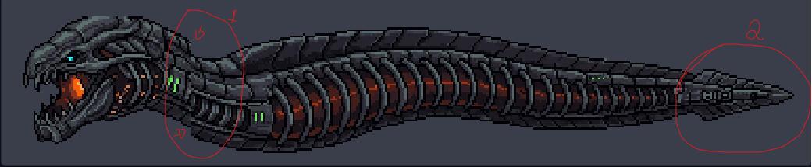
N1 · a junção, antes e depois
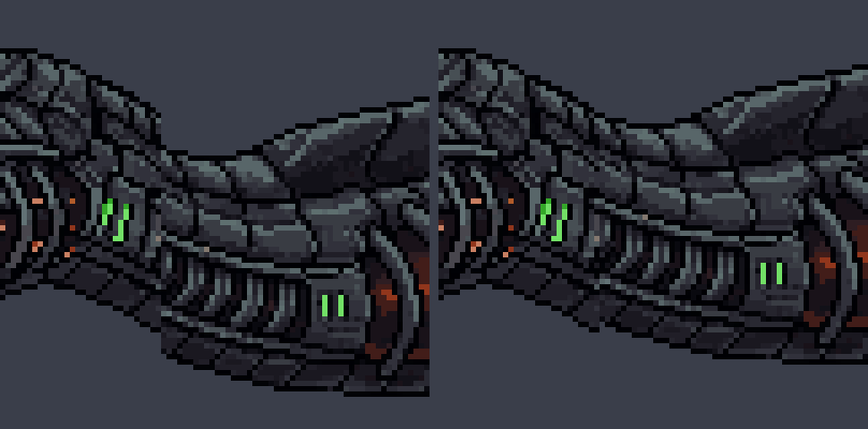
N2 · a ponta da cauda
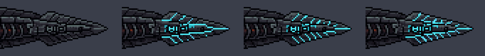
F1 · a enguia inteira
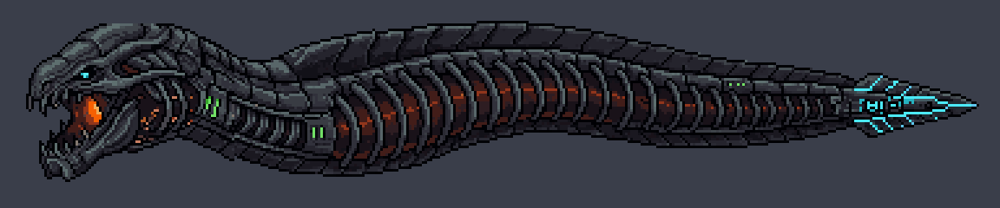
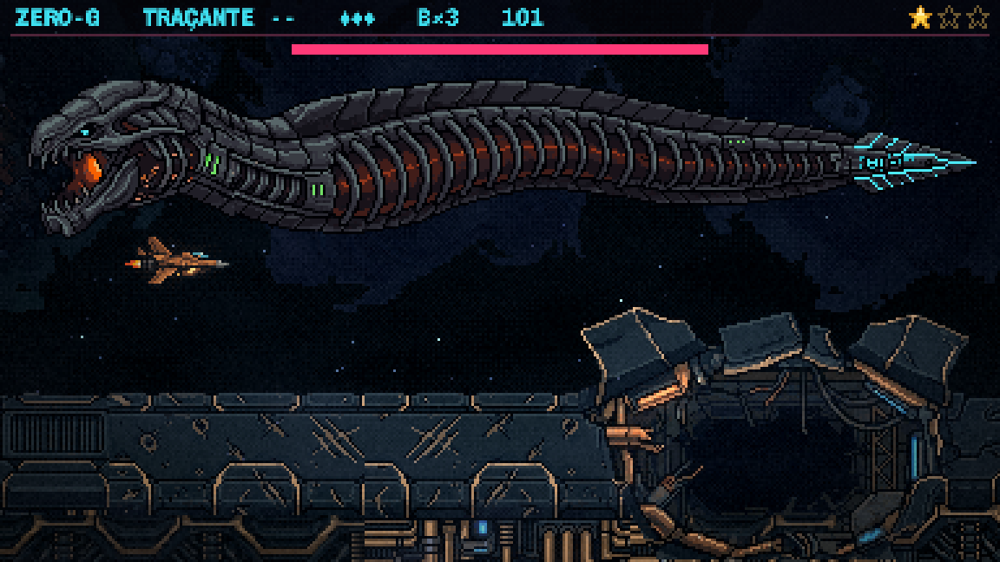
F2
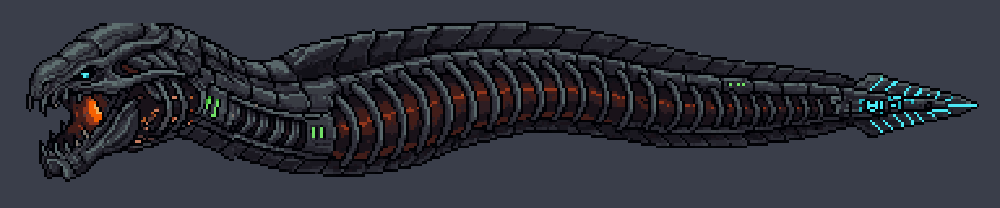
F3
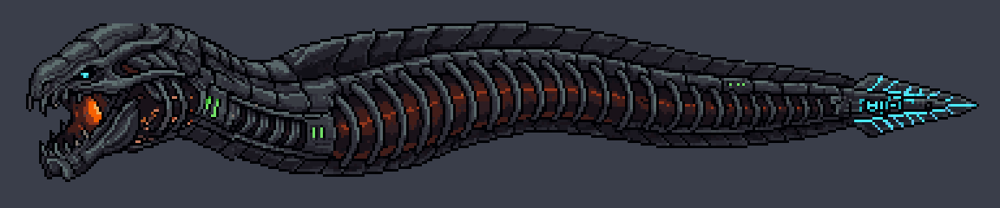
A minha recomendação: F1. As linhas longas pelas placas, com a linha do meio indo até a ponta, são as que mais lembram as costuras acesas da serpente de cabeça azul. A F2 é a alternativa mais discreta.
✅ ESCOLHIDA (04/11): a F1. Você: "Boa, eu vou de F1 também". A arte da enguia está fechada: aprovada/enguia-f1.png (384×80, a enguia inteira) e aprovada/cabeca-e3-pescoco.png (96×64, a cabeça sozinha). O próximo é o plano e a maquete do movimento em blocos (spec §7.1); os anéis e os mapas de normais saem dela.
A 1ª rodada do corpo (registro)
Todas as oito
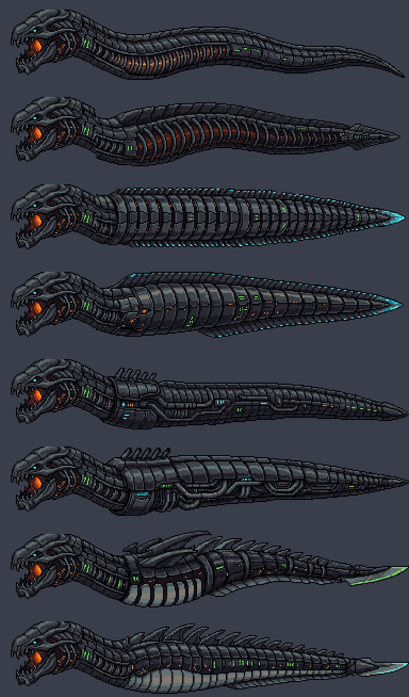
As cinco escolhidas
Cada uma ×3 e depois no tamanho real sobre a arena, esticada no alto da tela, com a nave como medida (sem a Atmosfera do jogo, que escurece um pouco).
A1 · As costelas, a esguia
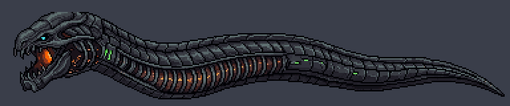
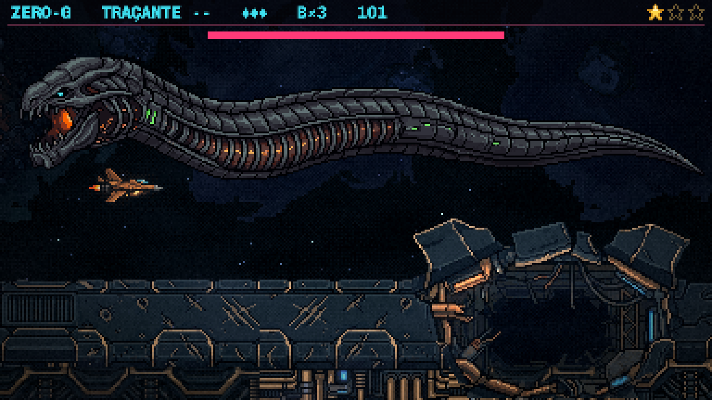
A2 · As costelas, a pesada
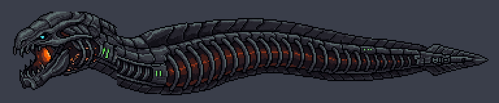
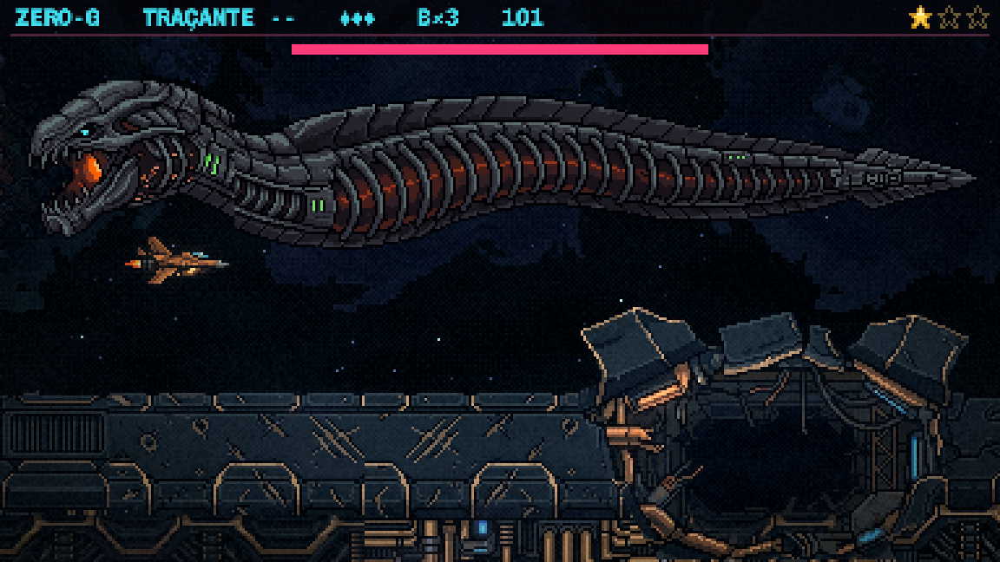
B · A barbatana
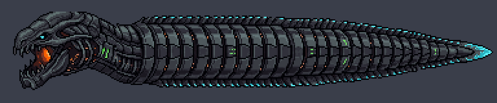
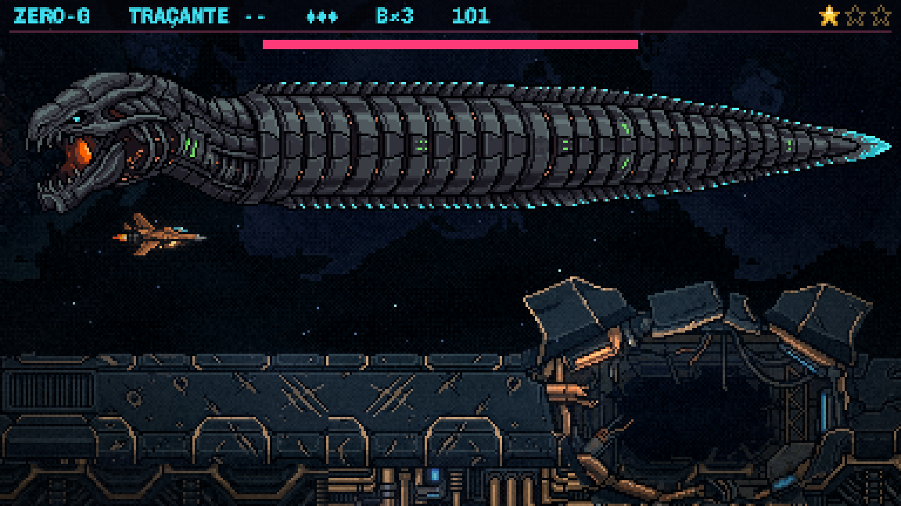
C · Os canos
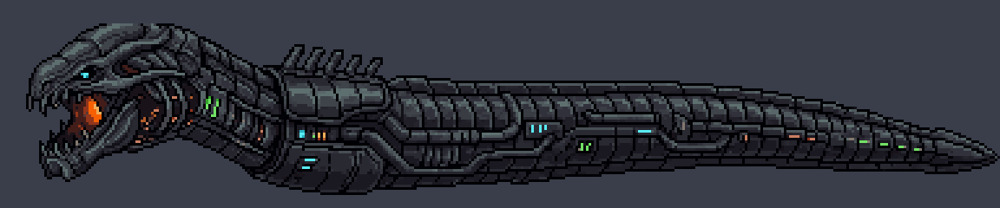
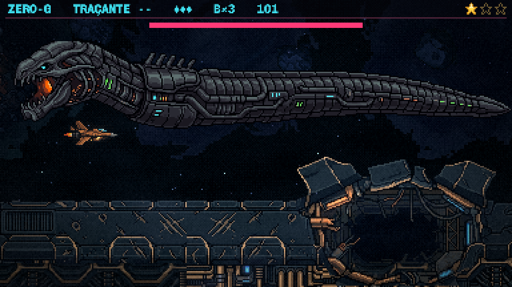
D · Os espinhos
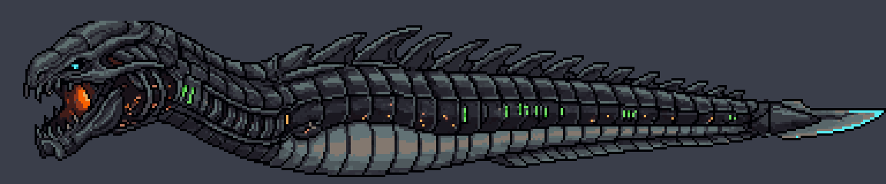
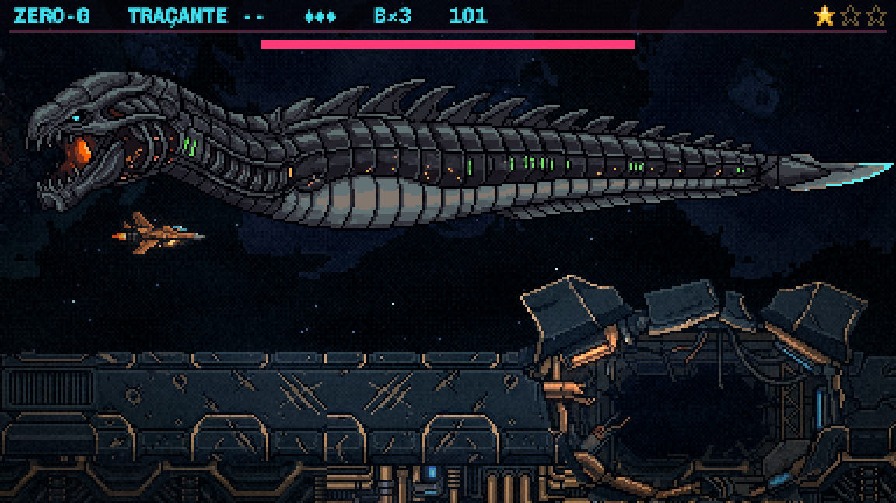
A minha recomendação
A1, as costelas esguias. É a que continua a cabeça que você escolheu: o pescoço oco e a brasa seguem pelo corpo sem emenda, e a silhueta lê como enguia de verdade. A cauda fina e longa deixa as mordidas nela bem visíveis (spec §6.2).
O que ela tem pouco são as três cores: é quase toda laranja, com um pouco de verde atrás. Se quiser, numa próxima rodada partindo da A1, ponho respiros azuis e verdes pelo corpo e o anel dos canos (o da C) logo atrás do pescoço.
Para você decidir
- Qual corpo segue? A1, A2, B, C ou D, ou uma mistura (diga o quê de qual).
- As três cores: pôr os respiros azuis e verdes e o anel dos canos no corpo escolhido?
Depois: o plano (a partir da spec) e a maquete do movimento em blocos, aprovada por vídeo (spec §7.1). Os anéis e os mapas de normais saem do corpo aprovado.